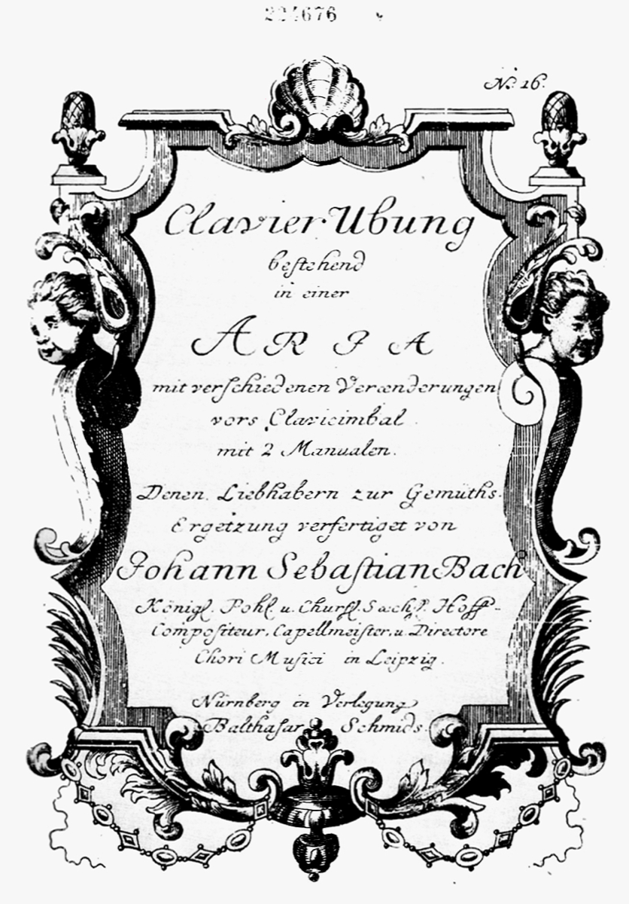

Goldberg Variations (Clavier-Übung IV)
Occasion — Publication — Clavier-Übung IV
Dating — Published 1741; the Keyserlingk commission story is Forkel's, flagged tradition on the event card.
Recommended recording — Glenn Gould, Goldberg Variations (Columbia, 1955 — and the 1981 farewell remake) · Recordings Shelf
Score — IMSLP (free score)

What it is. An Aria and thirty variations on its bass (the event card has the publication story and the insomnia legend): the ground-bass principle scaled to an eighty-minute planetarium. The clockwork: variations in threes — a character piece, a virtuoso two-manual "arabesque," and a canon, the canons ascending by interval (unison, second, third… ninth) as the wheel turns; at the center (variation 16) a French overture restarts the machine; at 25, the great minor-key adagio (harpsichordist Wanda Landowska's "black pearl") — chromatic grief at the geometric heart; at 30, the quodlibet's folk-song jokes; then the Aria again, unchanged and utterly changed.
Listen for, first pass. Don't track the schema — track the bass: hum the Aria's bassline until you own it, then hear it wearing thirty costumes. Second pass: the canons only, in order — strictness tightening while sounding ever freer. Third: 15, 21, 25 — the three minor-key variations as the work's hidden tragedy.
Craft. Every R4 thread converges: ground bass (Chaconne, Passacaglia), canon (BWV 769), dance, variation-as-world-building.
Reception thread. Beethoven's Diabelli answers it; and in 1955 a 22-year-old Canadian's debut recording (Gould — Arc III's centerpiece) made it, improbably, a bestseller and the modern piano's sacred mountain.
Original print with Bach's Handexemplar (Bach Digital)
Williams, Bach: The Goldberg Variations (Cambridge)
→ full bibliography & links